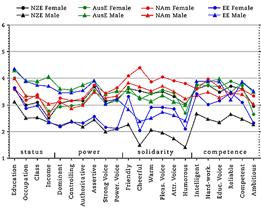

Evaluating English Accents WorldWide Results: SWEDEN
Sweden Personality Trait Means
115 Umeå University students
54 female, 60 male, 1 missing, mean age 25.3
(collected by Kirk Sullivan)

Swedish Students' Accent Guesses
majority/plurality percentage for each speaker in boldface;
major erroneous guesses italicised
Points to note:
The Swedish listeners watched about as much undubbed English-language
television as the Finns (ca. 5-6 hours per week), but scored the male EE voice
slightly lower in status traits, just behind the AusE male.
The NAm voices were clear leaders in solidarity traits, but were scored lower
in the other three areas than they were by the Finns.
In general, the Swedes assigned lower scores overall that the other groups;
few voices score over 4.0 in any of the 22 traits.
Created by:
Owen Baxter,
Modified: 13 Mar 2002, Made with Macintosh